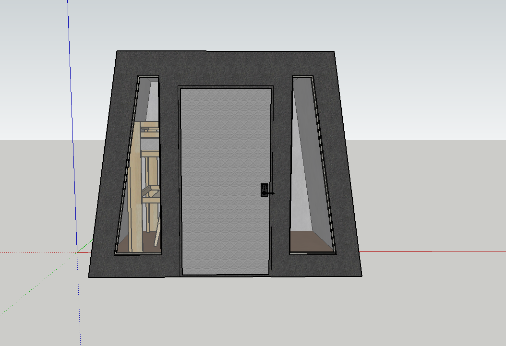
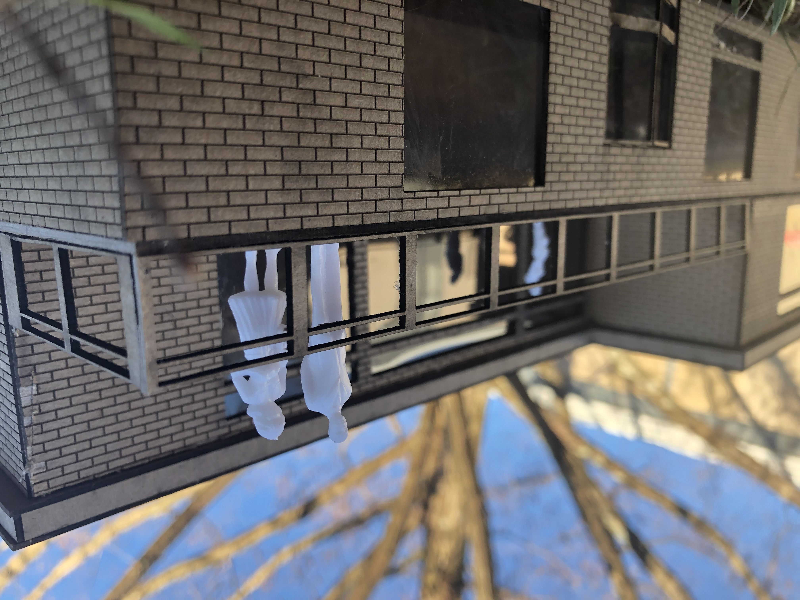

cidsworld
home
projects
art
trips
instagram
email

final showcase

project 06 : billboard house
kandinsky project
project 05 : microliving^3
project 04 : chipboard vocab
project 03 : emergency shelter
project 02 : cardstock model
project 01 : summer enrichment